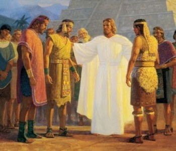
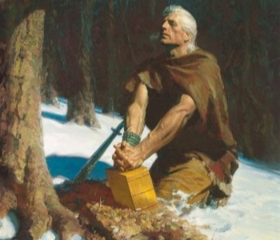

The Book of Mormon is a record of scripture that details the journey of a group of Israelites who, through the intervention of God, escaped Jerusalem before its ransacking at the hands of Babylon. This group follows the Lord's guidance to make their way across the sea to the American continent, circa 591-589 B.C., from which point the emigrants develop a civilization and divide themselves into two primary divisions: Nephites and Lamanites. They kept records for the space of approximately 1000 years, until the Lamanites overpowered and wiped out the Nephites.
In like manner to the Bible, the Book of Mormon contains teachings from several prophets who delivered their messages to the people in varying times and circumstances. Among the most unique and powerful aspects of the Book of Mormon is its clear witness of Jesus Christ, teaching clearly the doctrine of Christ and the clear knowledge among ancient peoples of the advent and Atonement of the Lord Jesus Christ. Its most significant event is the appearance of the risen Lord to the Nephites shortly following His resurrection.
The final keeper of the records among the Nephites was named Moroni. He witnessed the destruction of all his people, and was guided by the Lord to seal up the record in the earth, to come forth in the latter days. This eventually came to pass when the Lord called Joseph Smith to restore His Church too the earth. Joseph was led to the buried record, and translated them in due time by the gift and power of God. It stands as a witness of the divine calling of Joseph Smith and the reality of modern revelation. It likewise confirms the truth of teachings found in the Holy Bible (see 1 Nephi 13:40).
